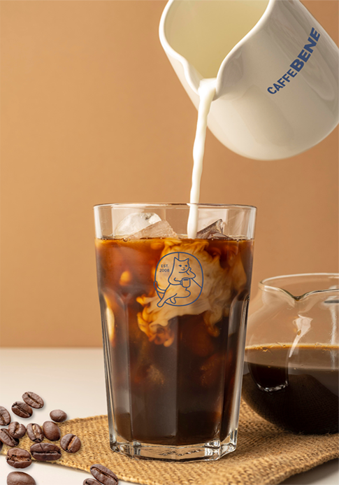

-

Caffe Bene
Specialty Espresso BlendFTT (Fram To Table)
좋은 커피는 좋은 생두에서 시작된다는
기본 원칙을 지키기 위해 농장에서 테이블까지
일원적인 관리 체계하에 완벽한 FTT 시스템을
구축하여 중간 유통과정에서 올 수 있는 품질의
손상을 최소화 하고 있습니다.
-
Quality
Certification해썹(HACCP)은 생산/제조/유통
전 과정에서 식품의 위생에 해로운 영향을
미칠 수 있는 위해요소를 분석하고,
위해 요소를 제거하거나 안정성을 확보할 수
있는 단계에 중요관리점을 설정하여
과학적, 체계적으로 식품의 안전을 관리합니다.
-
Single Origin,
Single Farm자몽의 쌉싸름하면서도 새콤한 풍미,
볶은 곡물과 견과류의 고소함,
브라운 슈가의 은은한 단맛.
이 모든 것이 한 데 어우러져
커피 한 잔이 탄생했습니다.
-
Medium
Roasting미디엄 로스팅은 커피 원두 본연의 맛을
최적화할 수 있는 단계입니다.
현재 카페베네 매장의 원두는 모두
미디엄 로스팅 방식을 거친 후 제공되며,
부드러운 산미와 함께 단맛, 무게감에
중점을 둔 커피입니다.
-

Cupping Note